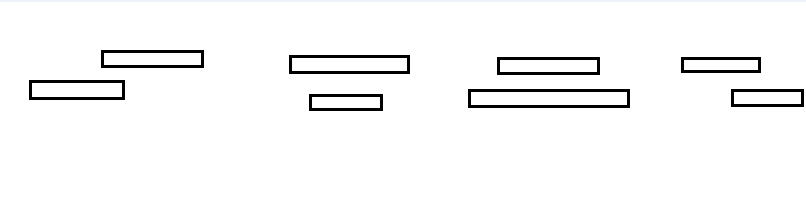

Leetcode BST系列（三）
说明
BST标签下面的是731.My Calendar II，但是为了完整，所以就把这三道题都放在一起了。
729. My Calendar I
题目大意是给定一个范围区间，判断新增的范围是否与之前的（左闭右开）区间有重叠，如果重叠则返回false，不重叠返回true并添加这个范围。
我的理解就很简单，重叠的情况就如下4种，所以判断的逻辑就是两种情况：
- 起始位置（start）小于区间左边，要想重叠那么end也要大于区间左边；
- 起始位置（start）大于等于区间左边，要想重叠那么start同时也要小于区间右边；
代码的话很简单，构造一个储存区间的list不重叠就往里add，每次判断都遍历这个list。时间复杂度是O(N²)，一次遍历是n，n次book。

1 | class MyCalendar { |
网上还看到另一种用TreeMap的解法，时间复杂度为O(NlogN)，每次新加入区间的时候维护一定的顺序，然后通过起始点比较的时候直接找到比start大的最小值，比start小的最大值，通过TreeMap这样的数据结构效率比之前的好，代码如下1
2
3
4
5
6
7
8
9
10
11
12
13
14
15
16
17class MyCalendar {
private TreeMap<Integer, Integer> t;
public MyCalendar() {
t = new TreeMap<>();
}
public boolean book(int start, int end) {
Integer a = t.floorKey(start); //比start小的最大值
if(a != null && start < t.get(a)) return false;
Integer b = t.ceilingKey(start); // 比start大的最小值
if(b != null && end > b) return false;
t.put(start, end);
return true;
}
}
731. My Calendar II
这道题是允许有两个区间重叠，但是不能有第三个，有了上一题的经验就不再用暴力破解，而是尝试一下TreeMap，既然在有重叠的区间上不能再允许重叠，那我们就可以把重叠的区间维护在一个TreeMap里，然后再用和上面一样的方法判断是否有重叠。那么现在的问题就是如何把重叠的区间放到TreeMap里，直接判断新来的区间是否和之前给的区间有重叠，有的话就放进去，然后发现把上面两个代码给结合了，竟然也过了。
1 | class MyCalendarTwo { |
以上代码能通过说明思路是没错的。可是这样的解法感觉有点简单粗暴，于是去看了看其他的题解。代码比较短的就是官方给出的边界统计的那个题解，代码如下：
1 | class MyCalendarTwo { |
上面维护的TreeMap，key是所有出现过的区间（起点、终点）的值，vlaue默认启示位置1，结束位置-1，可以看成从左到右滑动一样，当所有区间没重叠，每次开始位置+1，结束位置-1，当重叠一次时，肯定能累加到2，所以只要累加到3时，说明此时该起点位置的区间是不满足条件的，于是撤销它的+1和-1。最后那个判断起始点值为0时移除的操作是为了节省空间。虽然上面的代码简洁一点，但是理解起来确实有点难度。希望有更通俗易懂的解释。
732. My Calendar III
题意就是找出重叠的最大的区间个数，至多多少个区间重叠。直接改造上面的代码如下：
1 | class MyCalendarThree { |
既然都是判断新来的区间和已有的是否有重叠，那么用第一题判断重叠的办法还是可以做的。
总结
上面三道题最核心部分就是理解重叠区域的判断，只要正确判断了这个，那么很容易就可以解出来。至于后面边界计数的方法确实很巧妙，巧妙的方法理解起来也不是那么容易，但又很通用，确实需要慢慢消化一下。通过这几题还顺便用了一下TreeMap的api，平时几乎没用过，它的底层数据结构是红黑树，红黑树也是二叉查找树，所以自然而然就要用到它的排序性质，有机会深入TreeMap源码理解一下。
- 本文链接：https://chlch.github.io/2019/03/20/BST系列（三）/
- 版权声明：本博客所有文章除特别声明外，均采用 CC BY-NC-SA 3.0 CN 许可协议。欢迎转载，但是请转载请注明出处哦！